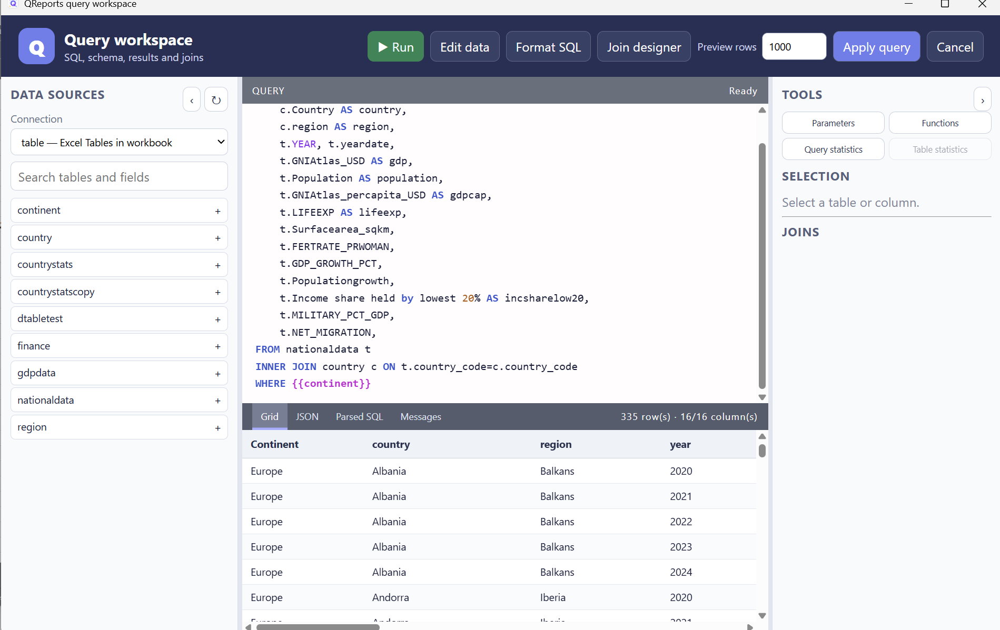
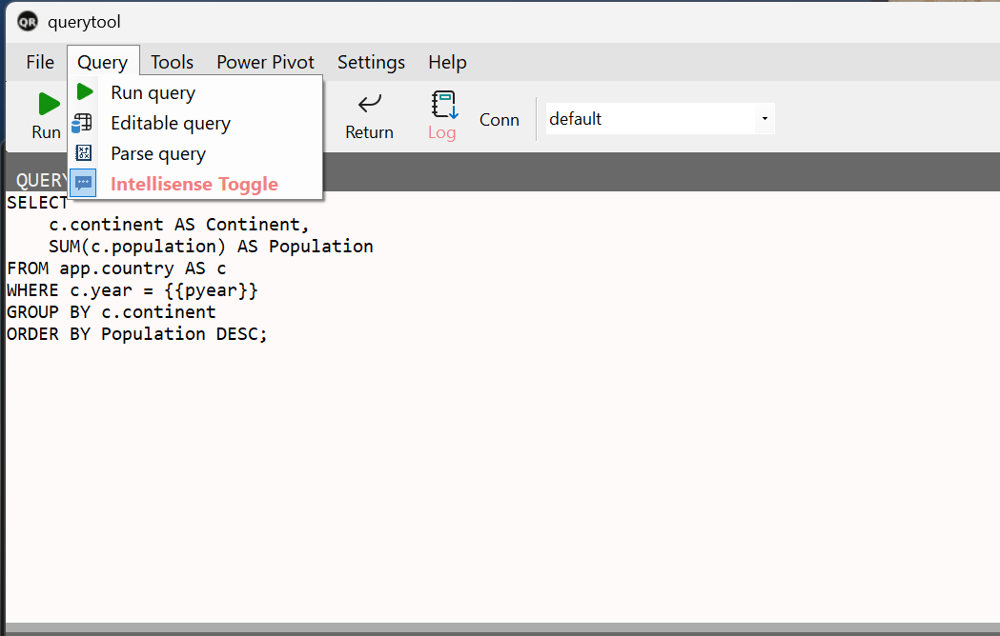
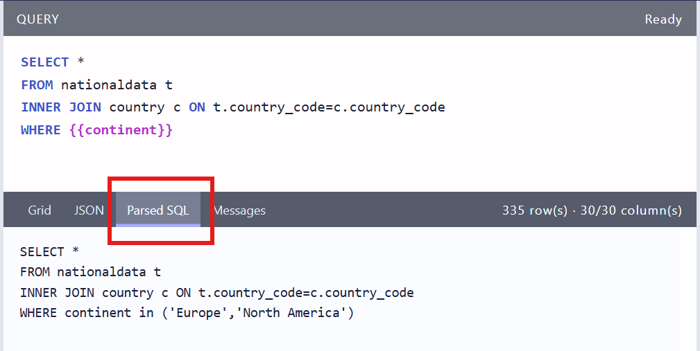

Query Tool
Query Web is the main workspace for finding data, writing and testing queries, previewing results, and returning a data-source definition to Excel. The current ribbon button opens the WebView workspace; the previous WinForms tool remains available under Legacy tools during the transition. Query Web supports SQL connections, Excel tables, the Power Pivot model, Canvas tables, and API definitions.
The workspace uses three resizable areas: sources and fields on the left, the SQL editor in the upper centre, and results below it. Use the edge buttons to collapse or reopen Sources and Tools. The result area contains Grid, JSON, Parsed SQL, and Messages; execution errors automatically activate Messages.
This page explains the normal workflow first, followed by the individual tools and context menus.
Execution feedback
While a query runs, Working shows elapsed seconds. After successful execution, open Messages for the returned row count, total elapsed time (including the host round trip and result rendering), and local completion time. The row count reflects the returned result, so a preview limit may reduce it. Failed queries still show the error and submitted SQL. Run selected and Run all use the same feedback.
The Parameters tool separates Used in this query from Available from Parameter Manager / _control. Collapse Used in this query to leave more room for available parameters; the selection is remembered while editing the query. Each list scrolls independently when there are many parameters.

Quick start
- Choose a connection at the top of the Sources pane.
- Expand a table to browse its columns.
- Select a table to inspect its columns, or write SQL directly in Query.
- Add parameters such as
{{pyear}}when the query needs user input. - Select Run or press F5 to preview the result. New workspaces default to 1,000 preview rows.
- Use Apply query when the result and definition are ready for Excel or the calling Canvas.
Right-click a table to preview its top rows, insert its name, create SELECT *, or create a query from its selected columns. Each table also has Selected → query and View top actions. Column filters can load distinct source values or accept advanced expressions such as in (2023,2024), between, comparisons, like, and null tests.
When Query Tool was opened from Canvas, Statistics, or the API tool, Return sends the query back to that calling window instead.
When returning to Excel, Query Tool writes a worksheet definition that QReports can reload. See QRep Excel Code to understand those rows, or use Formula Helper to look up and generate output syntax.
Local tables, source views and combined sources
Choose local — Local JSONL tables to query locally stored manual/imported tables and materialized source results. Groups work as schemas: SELECT * FROM [weather].[Temperature] or weather.Temperature. Use qualified names when tables belong to groups, including joins and previews. Table actions include aliases, View top 100, SQL insertion, Source information, editing and reimport where available. Hover a table name for its available type, comment, filename and last-update information.
Origin badges distinguish M manual, F file, W web file, V source view and C combined source. Source views materialize a saved SQL/API query into local rows; combined sources query local tables/views (including other combined sources). Neither implies a live cross-database join. Materialize remote sources first, then join their local results efficiently.
The Save dropdown provides Save as source view and Save as combined source. Reopen them using their edit action to change the stored query/connection definition. Assign tables to groups to keep related sources together. A source view refresh runs its remote query; a combined refresh recomputes its local result. Existing results remain snapshots until refreshed.
Update sources provides source/group selection, age/status information and dependency-aware ordering. Refresh required upstream views before downstream combined results; cycles or missing dependencies must be corrected rather than refreshed arbitrarily. Manual tables are not refresh candidates. Review the stored definition, parameters and connection before running updates that access remote services.
Import transformations
Local table editing supports CSV/TXT, Excel and web imports with a source comment. Reopening the import restores the source location and saved transformation steps, so renamed columns, selected/deleted columns, types and deleted source rows can be reproduced. Import-from-web remembers its URL; file import remembers its original location.
Toggle or resize the Applied steps pane. Each column name/type change, removed column or removed source row is an independent step, rather than a long chronological edit log. Delete a step using its red remove button to rebuild the table from the remaining steps. A change targeting a deleted column is skipped. Steps persist when saving and reopening imported tables. Manual tables do not use applied import steps.
Workspace shortcuts
Query tabs and workspace files
Turn on Show tabs under Settings → Query to display the query strip; tabs are off by default. With tabs hidden, use Run on above the editor to choose the query's execution connection. Each tab remembers its query text, execution connection, preview limit and current result while the window is open. New tabs inherit the Main tab's connection. The Data Sources pane is an independent reference browser: switching tabs does not change its selection or reload its tables. Parameters remain shared across all tabs.
Right-click a tab to add a tab, change its execution connection, duplicate or rename it, make it Main, or choose Compare with… for a vertical split. Both query editors and result grids remain visible. You can edit either query and run it independently; closing the split leaves the queries and their results in their tabs. The source browser is unchanged.
The tab marked ★ Main is the only query returned by Apply query to Excel or a calling Canvas/API window. Apply and the source-definition Save menu are unavailable on auxiliary tabs. Use Set as Main to change which query is returned. A Main tab cannot be closed until another tab has been made Main.
Save workspace… writes every tab and the shared parameter definitions to a versioned .qws JSON file. Open workspace… replaces the current tabs after confirmation. Results are not saved; rerun a tab after opening the file. Connection credentials are referenced by connection name rather than exported, and secret-typed parameter values are omitted. Query text and other parameter values remain readable JSON, so protect workspace files that contain sensitive inputs. Named connections must exist on the machine that opens the file.
The Design dropdown groups Edit query, Join designer, API designer and Format SQL. Edit query turns a supported single-table SELECT into an editable grid. SQL Server tables must have a primary key included in the selected columns; calculated/aliased columns, joins, aggregation, subqueries and write statements are rejected. Local manual tables support plain selected columns, WHERE and ORDER BY; imported tables and generated sources are not editable in this mode. The table context-menu Edit action remains useful for opening a table directly, while Edit query is better when you need a filtered or ordered subset.
Right-click an editable result column to configure a lookup from another table on the same connection. Choose its ID and name columns, display ID, ID–name or name, and order the list by ID or name. The saved cell value is always the ID. Lookup settings, hidden editable columns, and expanded source tables are remembered by this web workspace on this machine. Lookups load at most 5,000 options. The Open menu separates Open SQL file… from Open workspace… and lists recent items; selecting a recent item opens it directly rather than showing another file picker. After a .sql file has been opened or saved, Save quick-saves to that same path; use Save SQL as… to choose another file. The query-editor context menu includes Run selected, Run all, Copy to clipboard, Select all and Clear query window. Table context menus are constrained to the available window area so actions remain reachable at the bottom of the table list.
Mini SQL supports elapsed-day age calculations such as datediff('d', t.date, today()) AS age; quoted interval aliases include d/dd/day. Parameters use {{name}}; inspect Parsed SQL when a numeric column is compared to an unresolved or quoted string token.
Select or configure a connection
The Conn list controls how the query is interpreted and which tables, columns, functions, and execution engine are available.
| Connection | Intended use |
|---|---|
| Named SQL connection | Query a configured database using SQL. |
table |
Query Excel workbook tables using the supported table-query syntax. |
model |
Query the workbook's Power Pivot model using DAX. |
canvas |
Query tables made available by the current Canvas document. |
local |
Query local JSONL tables, source views and combined sources using Mini SQL. |
| API | Work with the API definition returned from API Explorer. |
The table connection is a core QReports feature. It runs Mini SQL for Excel tables, including filters, joins, groups, calculations, and parameters directly over workbook tables.
To add or change a named connection:
- Open Settings > Connections.
- Add or edit the connection details in Connection Manager.
- Save the connection.
- Return to Query Tool and select it from Conn.
Changing the connection clears the old table and column lookup so metadata from different sources is not mixed. Select Table again to load the new source.
Company and default connections
Company connections are loaded from %LocalAppData%\QReports\settings\company\connections.dat; personal connections are loaded from the user settings catalog. The two lists are merged by name, and a personal connection with the same name takes precedence. default is a conventional connection name, not a special restricted database session.
The company/read-only flags prevent ordinary users from editing centrally supplied definitions. They do not hide a connection from the source browser and do not reduce its database permissions. For SQL Server, QReports lists only objects for which the connected login passes HAS_PERMS_BY_NAME(..., 'OBJECT', 'SELECT'). Therefore a broadly privileged login can browse broadly even when its QReports definition is read-only. Use a least-privilege database account for a restricted default source; do not rely on the connection name or company flag as access control.
Find tables and columns
Select Table to load the table list for the current connection. Selecting a table loads its columns in the adjacent column pane. Double-clicking a column inserts it into the query.
The table search supports both ordinary table-name searches and schema-qualified searches:
countrysearches table names across the available schemas.app.shows tables from theappschema.app.counshows tables in theappschema whose names matchcoun.
Use View Top Records from a table's context menu when you want to inspect the source before building a query.
Query Wizard
Select Wizard to build a query visually:
- Check one or more tables.
- Check the columns to return.
- Add aliases, filters, sorting, or joins where needed.
- Use Show Joins to inspect the table relationships.
- Use Import from SQL to bring a supported existing SQL query into the wizard.
The generated query is updated as the wizard selections change. Review it before running, particularly when several joins are involved.
Write queries with aliases and IntelliSense
IntelliSense is useful for table names, aliases, columns, model fields, and parameter names. Its toolbar state shows On or Off; it can also be changed through Query > IntelliSense.
Use explicit aliases for readable queries:
SELECT
c.continent AS Continent,
SUM(c.population) AS Population
FROM app.country AS c
WHERE c.year = {{pyear}}
GROUP BY c.continent
ORDER BY Population DESC;
After an alias has been declared, type the alias followed by a period—for example c.—to display columns belonging to that table. Continue typing to narrow the list, then use Enter or Tab to accept the selected suggestion.
For a schema-qualified table, typing a schema followed by a period can show tables in that schema. The available suggestions depend on the selected connection and its loaded metadata.
Format the query
Select Format to format the current editor content:
- SQL is indented and its keywords are capitalized.
- A
modelquery is formatted as DAX. - API JSON is syntax-highlighted instead of being treated as SQL.
Formatting changes presentation, not query meaning. It is useful before saving a query or diagnosing a complex join.
Use parameters in a query
Parameters are written as double-braced tokens:
WHERE c.year = {{pyear}}
AND c.continent IN ({{continent}})
Select Param to display the parameter list. From there you can insert a selected parameter into the query, edit it, or create a new parameter. The final replacement text is controlled by the parameter definition, so a parameter may represent a single value, a date, or a complete multi-value SQL fragment.
See Parameters for input controls, list lookups, sheet scope, date and numeric formats, hierarchical selections, and text parsing.
Preview parameter substitution
Use Query > Parse query before running when you want to verify the generated statement. Query Tool resolves the parameter tokens, writes the resulting query to the log, and opens the log pane.
This is especially useful for:
- quoted text values;
- multi-select
IN (...)parameters; - optional/None conditions;
- date formats;
- finding an unexpected prefix, suffix, separator, or quote.

Run a query and limit preview rows
Select Run or press F5. If text is selected in the editor, F5 runs the selected text; otherwise it runs the complete query.
The result appears in the Result pane. The status area and log report progress, warnings, and errors.
Use Settings > Recordcount to change the preview row limit. A smaller limit is useful while developing a query against a large source. The limit controls the Query Tool preview and is not intended as a substitute for a deliberate SQL TOP, LIMIT, or source-side filter when the final definition itself must restrict rows.
Log window
Select Log to show or hide the log pane. It contains execution messages, parsed queries, warnings, and errors. When a warning or error occurs, the status area displays a short message and the Log button changes appearance.
Use Settings > Clear log to empty the current log buffer. Clearing the log does not change the query or its result.
A useful diagnostic sequence is:
- Clear the log.
- Select Parse query to inspect parameter replacement.
- Run the query.
- Read the new messages without older entries mixed in.
Statistics and charts
The Tools menu exposes two related but different views:
- Statistics opens the chart designer using the query result. This is the same main route as selecting the Chart toolbar button.
- Show query statistics displays a descriptive statistics table for the returned columns, such as counts and numeric summaries.
If no current result is available, the command runs the query first. Parameters are resolved before the data is handed to the statistics/chart window.

For chart types and formatting, continue to the Chart tool. DAX measures are described separately in DAX measures.
Function reference
Select Function to replace the table list with functions supported by the current query mode. Selecting a function shows its description and syntax in the column/details pane. Function help also appears near the editor while entering supported function arguments.
The function list changes with the connection:
| Current connection | Function family |
|---|---|
| Named SQL source | SQL functions appropriate for database queries. Actual database support can vary by provider. |
table |
QReports' supported MiniSQL/table functions for querying Excel tables. |
model |
DAX functions for Power Pivot model queries. |
Do not assume that a function shown for one mode is valid in another. Select the target connection before opening Function.
See Mini SQL for Excel tables for syntax, function groups, examples, the CSV roadmap, and differences from database SQL.
Editable query mode
Use Query > Editable query when the result should be edited and written back to a SQL table.
- Start with a straightforward query against one updateable SQL table.
- Select Editable query.
- Edit, add, or delete rows in the Result grid.
- Select Save in the result area to write the pending changes.
The source table needs a usable key, and the provider must be able to generate insert, update, and delete commands. Aggregates, calculated columns, joins, and other non-updateable result sets may be displayed but cannot normally be saved back.
In editable mode, Query Tool remembers hidden result columns for the connection/table. Right-click a result header and use Hide this column, Select/hide columns, or Show all columns. Lookup columns can present an ID together with a friendly name while retaining the underlying value; sorting still follows the underlying value.
Open and save query files
The File menu supports two useful formats:
- Open File opens
.sqlor.qtlfiles. Recently used files are also tracked by Query Tool. - Save as sql file saves only the parameter-resolved SQL text as UTF-8
.sql. - Save as qrep file saves a
.qtlQuery Tool definition containing the raw query, connection, parameters, and measures.
Use .sql when the statement should be portable to another SQL editor. Use .qtl when you want to reopen the complete QReports working definition.
Context menus
Right-click menus change according to the pane and current connection mode.
Table pane
- View top records.
- Insert the table name or
SELECT *into the query. - Set a table alias.
- Add or display join and filter columns in Wizard mode.
- Edit an updateable table.
- Show statistics for a table.
- Automatically size the displayed columns.
Column pane
- Insert selected columns into the query.
- Fill or refresh example values.
- Show or hide metadata columns such as Alias, Example, Output, Index, Identity, and Type.
- Expose a filter column.
- Automatically size the displayed columns.
Query editor
Select text and right-click to show details for a selected table name, run only the selected area, or copy the selected area.
Result pane
Right-click a column header to auto-size or hide columns, select visible columns, configure a lookup column, or choose numeric/date formatting. Right-click result cells to copy values or rows and export the visible result to CSV.
API tool
Select API tool or Tools > API query to open API Explorer. Existing API JSON in the query editor is passed into the explorer. When you return, the API definition and preview data are passed back through Query Tool so columns, parameters, measures, and the Excel return definition follow the same route as other queries.
See the API tool for the dedicated API workflow.
DAX measures
Select Dax or Tools > Define Measures to manage measures associated with the current query definition. Measures are a separate subject because they can include aggregation behavior, calculated columns, formatting, matrix visibility, and model-specific DAX.
Continue to Mini DAX and measures.
Power Pivot menu
The Power Pivot menu is relevant primarily when the selected connection is model and the workbook contains a Power Pivot model. Its commands link to Excel's model tools:
- Manage measures;
- Manage Relationships;
- Power Query editor;
- Open pivot model;
- View pivot Model as HTML.
These commands depend on an Excel-hosted Query Tool and a workbook/model that supports the requested feature. They may do nothing in the standalone or Canvas-hosted Query Tool.
Return the definition
Select Return only after the query and preview are correct. When Query Tool is hosted by Excel, this is the supported route for patching the data-source definition into the sheet without unnecessarily replacing the surrounding setup. Existing measures and other definition elements are carried through the Query Tool workflow.
If Query Tool was opened by Canvas, Statistics, or API Explorer, Return closes Query Tool and passes its current definition back to that caller.